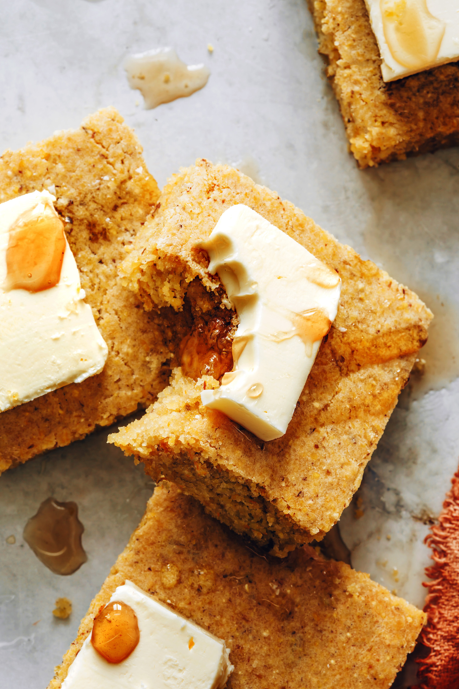

Cornbread

Description
Everyone needs a good cornbread recipe to go with chili, soup, BBQ bean bowls, and black eyed peas. And this, friends, is it! Say hello to the BEST vegan cornbread!
Just 10 ingredients required for this easy, fluffy recipe. Let us show you how it's done!
Ingredients
- 1 ½ batches flax egg (1 ½ Tbsp (11 g) flaxseed meal + 4 Tbsp (60 ml) water as original recipe is written)
- 3/4 cup unsweetened plain almond milk (plus 1 Tbsp as original recipe is written // adjust if altering batch size)
- 1 tsp lemon juice or apple cider vinegar
- 1/2 tsp baking soda
- 1/3 cup vegan butter, melted (we like Earth Balance)
- 1/2 cup organic cane sugar or granulated sugar
- 2 Tbsp unsweetened applesauce
- 1/2 tsp sea salt
- 3/4 cups fine yellow cornmeal (plus 1 Tbsp as original recipe is written // adjust if altering batch size)
- 3/4 cups unbleached all-purpose flour (plus 1 Tbsp as original recipe is written // adjust if altering batch size)
Steps
- Preheat oven to 350 degrees F (176 C) and grease an 8x8-inch baking dish (adjust number/size of baking dish if altering batch size).
- Prepare flax egg in a small bowl and let set for a few minutes to achieve an "eggy" texture.
- Measure out almond milk, add lemon juice, and let curdle for a few minutes. Then add baking soda and stir once more. Set aside.
- To a large mixing bowl, add melted butter and sugar and whisk vigorously to combine. Then add applesauce and flax egg, and whisk once more. Next add almond milk mixture and whisk vigorously again to combine.
- Add salt, cornmeal, and flour and stir with a spoon until just incorporated. It will look thin and somewhat lumpy. That's what you're going for.
- Add batter to prepared dish(es) and bake for 28-37 minutes, or until the edges are golden brown and a toothpick inserted into center comes out clean.
- Let rest in the baking dish for a few minutes before serving. I highly recommend serving these with just a touch of non-dairy butter and maple syrup or honey if not vegan.
Notes
- Nutrition information is a rough estimate calculated without additional toppings.
- Note: You can learn more about the origins of cornbread here.
- Recipe heavily adapted/expanded from my Vegan Cornbread for 2.